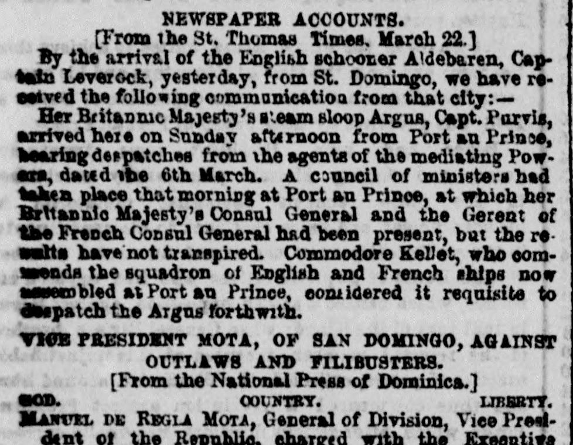

Aaends the squadron ot English and French skips now aaserobled atSe une a la escuadra de buques ingleses y franceses ahora reunida en
The New York Herald. New York [N.Y.], May 2, 1856. Page 2. View the originalVer el original

According to the National Press of Dominica, as reported by The New York Herald on May 2, 1856, General Regla Mota, Vice President and charged with the Executive power of the Republic of San Domingo, issued a decree targeting foreign schemes and potential understandings with Haytiens. The decree mandates that any expelled individual who disembarks in Dominican territory without official permission, as well as anyone who hides them, shall be executed upon the identification of their person without a formal trial.A tenor de la Prensa Nacional de Santo Domingo, reseñada por The New York Herald el 2 de mayo de 1856, el general Manuel de Regla Mota, vicepresidente encargado del Poder Ejecutivo de la República Dominicana, dictó un decreto contra asechanzas foráneas y posibles inteligencias con los haitianos. La disposición conmina a que todo proscrito que arribe a playas dominicanas sin salvoconducto oficial, así como cuantos les brinden abrigo, sea pasado por las armas comprobada su identidad y sin formación de causa.
FULL TEXT:TEXTO COMPLETO:
NEWSPAPER ACCOUNTS.CUENTAS DE PERIÓDICOS.
[From the St. Thomas Times, March 22.][Del St. Thomas Times, 22 de marzo.]
By the arrival of the English schooner Aldebaren, Captain Leverock, yesterday, from St. Domingo, we have received the following communication from that city:—Por la llegada de la goleta inglesa Aldebaren, capitán Leverock, ayer, procedente de Santo Domingo, hemos recibido la siguiente comunicación de esa ciudad:—
Her Britannic Majesty’s steam sloop Argus, Capt. Purvis, arrived here on Sunday afternoon from Port au Prince, bearing despatches from the agents of the mediating Powers, dated the 6th March. A council of ministers had taken place that morning at Port au Prince, at which her Britannic Majesty’s Consul General and the Gerent of the French Consul General had been present, but the results have not transpired. Commodore Kellet, who commands the squadron of English and French ships now assembled at Port au Prince, considered it requisite to despatch the Argus forthwith.La balandra de vapor de Su Majestad Británica Argus, capitán Purvis, llegó aquí el domingo por la tarde procedente de Puerto Príncipe, trayendo despachos de los agentes de las Potencias mediadoras, fechados el 6 de marzo. Un consejo de ministros había tenido lugar esa mañana en Puerto Príncipe, en el cual el Cónsul General de su Majestad Británica y el Gerente del Cónsul General francés habían estado presentes, pero los resultados no han transpirado. El Comodoro Kellet, quien comanda la escuadra de buques ingleses y franceses ahora reunida en Puerto Príncipe, consideró requerido despachar el Argus inmediatamente.
In this article, the newspaper calls the country 'Dominica.' It means the Dominican Republic, not the island of Dominica.En este artículo, el periódico llama al país «Dominica». Se refiere a la República Dominicana, no a la isla de Dominica.